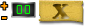
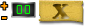

כללי
- כדי להכניס שחקן לחצו על שמו ברשימה, במידה ויש מקום פנוי על הבמה הוא יכנס למקום הפנוי (ישנם 9 מקומות על הבמה מסודרים בשורה הראשונה מהמרכז לצדדים ואז בשורה השניה).
- כדי להוציא שחקן מהבמה (חזרה לרשימה) לחצו עליו והוא יצא (שימו לב שאינכם נמצאים במצב הלבשה או ספוט או חסימה).
- כדי להכניס שחקנים באופן אקראי לחצו על האייקון המשחק ימלא את כל הבמה במידה ויש מספיק שחקנים.
- כדי להוציא את כל השחקנים מהבמה ביחד לחצו על האייקון .
- כדי לחסום שחקנים מהמשחק לחצו על האייקון ואז לחצו על השחקן אותו אתם רוצים לחסום. שימו לב! חסימת שחקנים היא לפי שם, שחקן שחסמתם לא יוכל להכנס למשחק (גם אם יצא ויכנס לאקולוקו מחדש) עד אשר אתם עצמכם תצאו מהמשחק. הודעת אישור תופיע לפני ההרחקה.
משחקים
בפינה השמאלית העליונה ישנם 3 טאבים מוחבאים, הטאב העליון הוא טאב המשחקים. לחיצה עליו תפתח אותו, לחיצה על הרקע השחור שלו כשהוא פתוח תסגור אותו.
- האייקון יפעיל הצבעת דירוג, השחקנים יקבלו מספרים מ-1 עד 6. מפעיל המשחק יקבל כפתור הפסקת הצבעה וחלון אשר יראה את כמות ההצבעות לכל מספר (רק אתם תראו את החלון הזה, שאר השחקנים יראו רק ממוצע). לחיצה על כפתור הפסקת ההצבעה יציג לכל המשתתפים את הממוצע של ההצבעות וכפתור הפסקת ההצבעות יצבע ירוק, לחיצה נוספת עליו תסגור את ההצבעה. שימו לב! כל שחקן יכול להצביע פעם אחת בכל הצבעה.
- האייקון יפעיל את הצבעת הדירוג כמו בשלב הקודם אך ורק לשחקנים אשר נמצאים על הבמה. שחקנים שלא נמצאים על הבמה לא יראו אפשרות להצביע.
- האייקון יפעיל את אפשרות ההצבעה כן\לא. בהצבעה זו כל השחקנים יקבלו אפשרות להצביע בעד או נגד. מספר ההצבעות יוצג לכולם. לחיצה על האיקס תסגור את ההצבעה . שימו לב! לכל שחקן יש אפשרות להצביע פעם אחת בכל הצבעה.
- האייקון יפעיל את אפשרות ההצבעה כן\לא אך ורק לשחקנים אשר על הבמה. שאר השחקנים יראו רק תוצאות .
- האייקון יפעיל את ניקוד השחקנים, במצב זה תראו חלונית ניקוד ליד כל שחקן
 לחיצה על הפלוס תעלה את הניקוד לאותו שחקן, לחיצה על המינוס תוריד את הניקוד. שימו לב! לא ניתן להוריד מתחת לאפס, ולא ניתן להעלות מעל 99. שחקן שיוצא מהבמה הניקוד שלו יעלם, שחקן שיכנס לבמה הניקוד שלו יהיה אפס. כדי לסגור את מצב הניקוד יש ללחוץ על האיקס . לחיצה על הפלוס תעלה את הניקוד לאותו שחקן, לחיצה על המינוס תוריד את הניקוד. שימו לב! לא ניתן להוריד מתחת לאפס, ולא ניתן להעלות מעל 99. שחקן שיוצא מהבמה הניקוד שלו יעלם, שחקן שיכנס לבמה הניקוד שלו יהיה אפס. כדי לסגור את מצב הניקוד יש ללחוץ על האיקס .
אפקטים וסאונדים
בטאב המשחקים האמצעי נמצאים האפקטים והצלילים שתוכלו להפעיל.
- האייקון יפעיל בלונים במשחק. הבלונים נעלמים באופן אוטומטי, אחרי שנעלמו ניתן להפעיל את הבלונים שוב.
- האייקון יפעיל קונפטי במשחק, הקונפטי יפסיק לבד, אחרי שהפסיק ניתן להפעילו שוב.
- בטאב הזה ישנם 8 סאונדים שונים אשר מוצגים ברמקולים בצבעים שונים מעבר עם העכבר על כל רמקול ישמיע רק לכם את הסאונד, לחיצה עליו תשמיע אותו לכולם (גם לכם).
אפקט יציאה
בטאב המשחקים התחתון ישנם כפתורים אשר יגדירו את מצב היציאה של השחקנים מהבמה.
- האייקון יגדיר מצב יציאה רגיל ללא אפקט
- האייקון יגדיר מצב יציאה בענן.
- האייקון יגדיר מצב יציאה בפומפה, שימו לב! אין להכניס ולהוציא שחקנים עד שהאנימציה נגמרת!! ואין להשתמש במצב הכנסת שחקנים באקראי!
- האייקון יגדיר מצב יציאה בחשמל.
- האייקון יגדיר מצב יציאה בבור, שימו לב! אין להכניס ולהוציא שחקנים עד שהאנימציה נגמרת!! ואין להשתמש במצב הכנסת שחקנים באקראי!
בלחיצה על הוצאת כל השחקנים או הכנסת שחקנים באקראי מצב האנימציה ישפיע על כל השחקנים ביחד! לכן שימו לב באיזה מצב אתם נמצאים לפני שאתם מכניסים שחקנים באקראי.
לצופים במשחק יופיע אייקון של רמקול אשר יאפשר להם לבטל את הסאונדים אצלהם במשחק.
תהנו
צוות אקולוקו
|